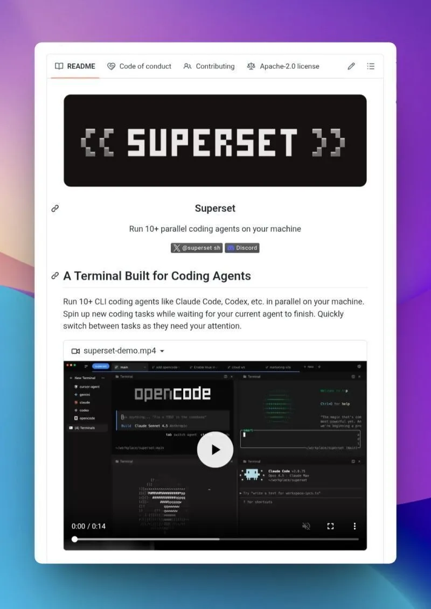

Running multiple AI agents without terminal conflicts
Originally posted on LinkedIn, January 13, 2026.
Superset lets you run several AI agents on your computer at the same time. Each agent gets an isolated terminal session, so one can write code, another can debug, and a third can test without conflicts.
It is built for developers who use CLI-based AI tools and want to manage multiple agents cleanly from one place. If AI is becoming a serious part of your daily work, this makes the setup much easier to manage.
